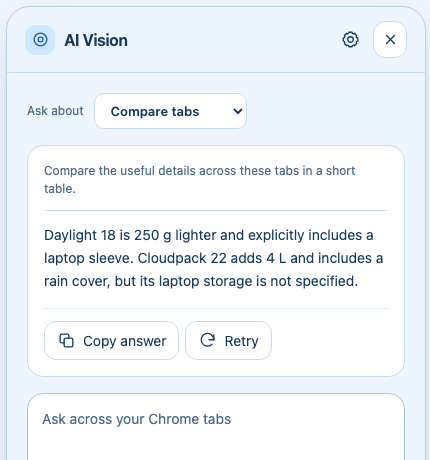

How to compare Chrome tabs with Gemini
By AI Vision project · Updated
To compare sources in Chrome, choose Compare tabs in AI Vision and ask one focused question. Gemini organizes supported pages into a side-by-side answer while keeping the source differences visible.

Prepare the tabs and permission
- Set up your Gemini key, then open the related sources in one Chrome window.
- Close unrelated tabs in that window, or move your research into a separate window to keep the context focused.
- Open AI Vision and choose Compare tabs (All Tabs in version 2.5).
- On first use, review the optional permission page. If you grant access, return to AI Vision and send the question again.
- State what you want compared and ask it to identify the source for each claim.
The extension considers up to 20 supported pages in the starting window. It does not read Chrome’s saved browsing-history database. Restricted pages are excluded, and long page content may be shortened.
Worked example: choose a commuting bag
Suppose two fictional product tabs contain these details:
| Bag | Details shown |
|---|---|
| Daylight 18 | 18 L; 600 g; padded laptop sleeve; no rain cover. |
| Cloudpack 22 | 22 L; 850 g; rain cover included; laptop sleeve not specified. |
“Compare these bags for a light laptop commute. Preserve the listed numbers, name the source for each detail, and mark missing information.”
Illustrative answer: Daylight 18 is 250 g lighter and explicitly has a laptop sleeve. Cloudpack 22 adds 4 L of capacity and a rain cover, but laptop storage is not specified. Verify whether the Daylight sleeve fits your laptop before choosing it.
The answer should not invent a laptop compartment for Cloudpack. Missing information is itself a useful comparison result. For a follow-up, ask “Which single detail would you verify on each product page?”
Useful comparison prompts
- Products: “Make a table of the exact prices, dimensions, included items, and return terms shown. Do not infer missing specifications.”
- Research: “Where do these sources agree? Where do they disagree? Keep each source title next to its claim.”
- Decision brief: “Compare the options against these three criteria. Separate facts from your recommendation and state what is missing.”
If a tab is missing
Confirm that the tab is in the same Chrome window and has finished loading. Chrome internal pages, the Chrome Web Store, and other restricted pages cannot be analyzed. Keep the relevant sources within the 20-page limit. If page text is not readable, ask about a screenshot of the important detail.
If permission was denied, AI Vision does not continue collecting those tabs. Retry only after granting the optional access. You can still use This page for a single-page summary.
Check the comparison before relying on it
Revisit exact prices, dates, and limitations in the source tabs. Ask Gemini to flag conflicting time periods or conditions rather than merging them. A comparison can organize the material, but its claims still need checking against the original pages.
Compare tabs sends the question and bounded context from supported pages to Google’s Gemini API. Review the privacy notice and use a focused research window. For connection or quota errors, use the setup troubleshooting guide.